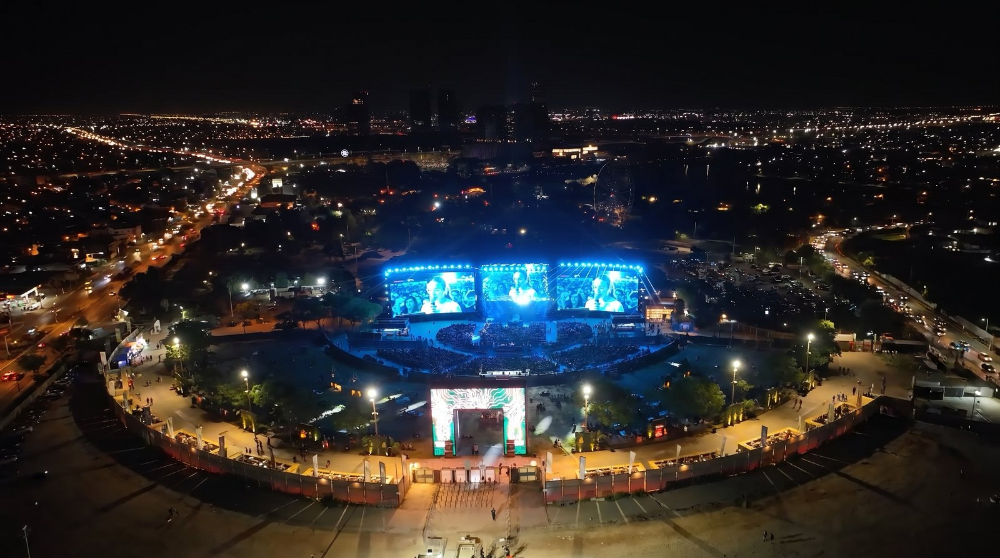
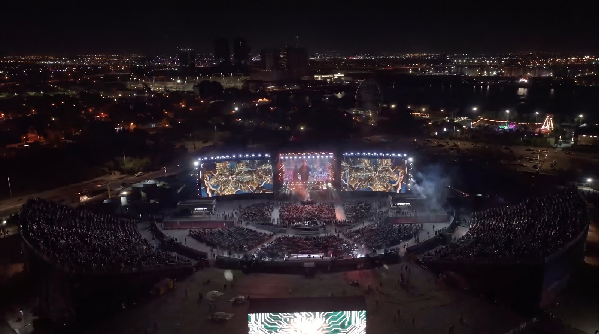
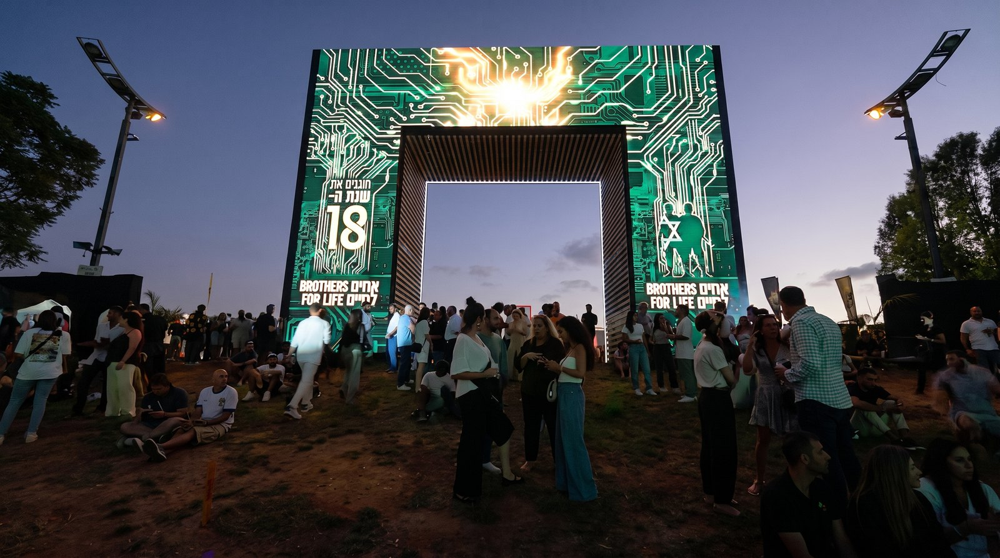
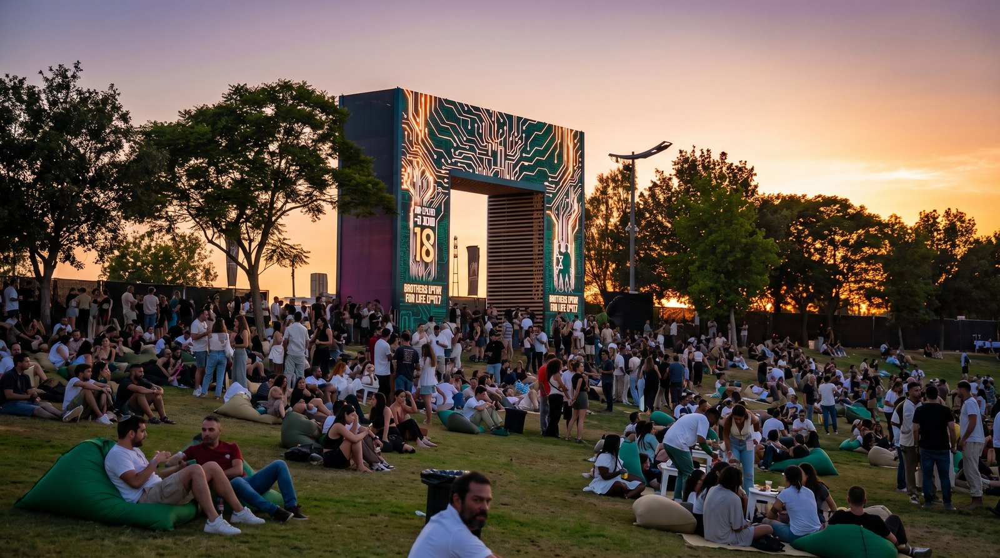
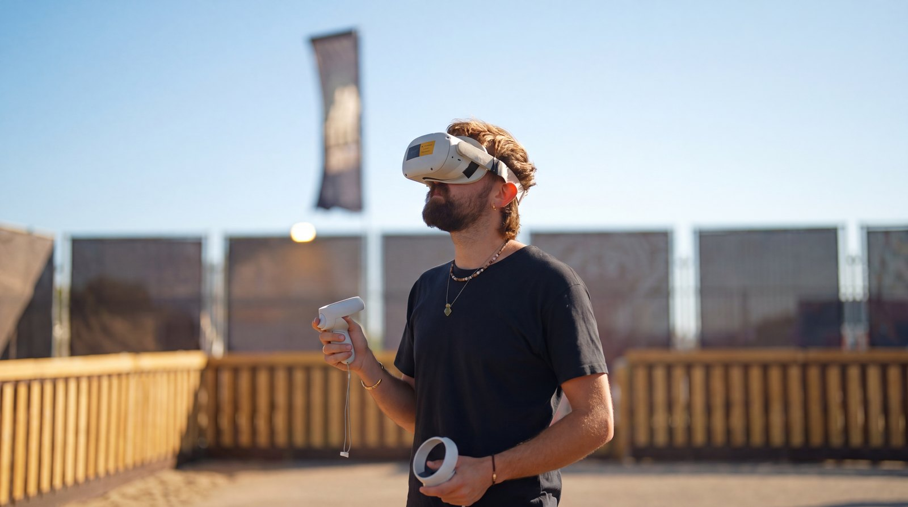
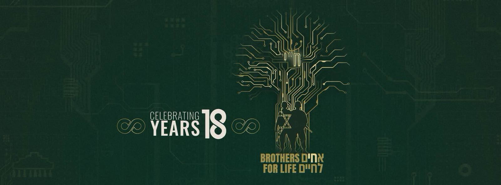

Summary
A large-scale gala concert marking the 18th anniversary of Brothers for Life (Achim LaChaim) — the Israeli organization of wounded IDF combat veterans supporting one another's return to full life — held June 16, 2026 at Live Park Rishon LeZion before an audience of some 6,000 guests. Nick Dreyden designed the complete visual environment of the evening: a three-screen panoramic video system, documentary content, and an accompanying VR gallery — turning the anniversary into an immersive journey through 18 years of brotherhood.
Creative Team
- Video Design, Show Visuals & VR: Nick Dreyden
- Creative Director: Amit Epstein
- Color Grading: Alex Vichas
Event
June 16, 2026 — Live Park, Rishon LeZion (~6,000 guests).
Visual & Multimedia Concept
The dramaturgical spine of the show was a single evolving image — a tree of brotherhood. Born from roots in the opening, it grew across the panoramic screens into a living organism: an animated timeline unfolded through its branches, with photographic "plates" marking the years of the organization's history; day turned to night around it as the concert moved through its musical numbers; and in the show's later arc the tree transformed into a neon, circuit-board organism — golden electronic traces pulsing through its silhouette — before resolving into a mosaic of hundreds of community photographs forming the Brothers for Life emblem. The show ran on a panoramic three-screen system driven by Resolume Arena — a unified canvas of 14,080×2,560 px composed as five groups and eighteen live layers, allowing the visual dramaturgy to move seamlessly across the entire stage width, with live cameras integrated into the screen architecture. Dreyden also built the evening's documentary spine: VTR films including "Dreams" — a portrait montage drawn from an archive of veterans' interviews (a full transcript corpus of 551 timecoded segments was processed and translated for the edit); and an original video-art suite for the keynote address by Rav Chaim Levin — five seamless generative loops in the same circuit-board aesthetic, with live bilingual subtitles. The project extended beyond the hall: an immersive VR gallery "18 Years" (built in 3DVista for Meta Quest 2) let guests walk through the organization's history — deployed as a web-based experience accessible on the spot.
Gallery





